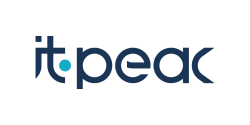
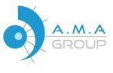
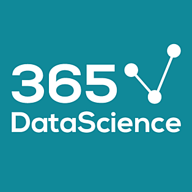
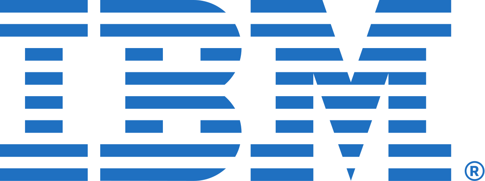
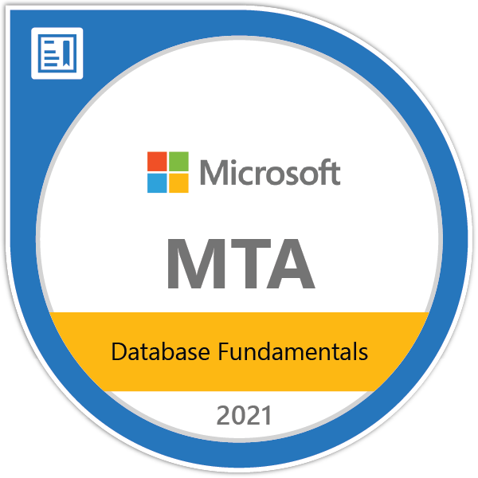

Formation
Master en Intelligence Artificielle
EPITA | 2024 - 2025
Master international en Sciences des Systèmes d'Intelligence
Artificielle.
Mention: Très Bien
Paris, France
Licence en Mathématiques Appliquées
ESB | 2020 - 2023
Analyse des Données et Aide à la Décision.
Mention:
Excellent
Tunis, Tunisie
AI-Powered Business Intelligence Agent
AI-Powered Business Intelligence Agent
Featured Project
Project Overview
A comprehensive, AI-driven Business Intelligence platform designed to democratize data analysis. This full-stack application enables users to transform raw data (CSV, Excel, SQL) into actionable insights through an intuitive, conversational interface. It leverages Google Gemini's advanced reasoning capabilities to automate complex data tasks—from cleaning and modeling to dashboard generation and report writing.
Key Features
- Intelligent Data Ingestion & Cleaning: Seamlessly upload files or connect to SQL. AI automated quality checks (missing values, duplicates) and one-click cleaning fixes.
- Advanced Data Modeling: Automatic relationship inference and Star Schema suggestions. Interactive visual modeler using React Flow.
- Natural Language Analysis: Conversational BI queries (e.g., "Show sales trends"). AI generates efficient SQL/Pandas code.
- Dynamic Dashboard Generation: Auto-creates relevant charts (Plotly) and simplified KPI dashboards. Supports drilling down and multi-table views.
- Automated Reporting: Generates markdown-formatted executive summaries. AI highlights key trends and anomalies automatically.
Architecture & Deployment
Agentic Workflow: Autonomous agent breaking down goals (Plan -> Execute
-> Verify).
Stateful Sessions: Maintains context across analysis.
Cloud Native Infrastructure: Deployed on GCP using
Cloud Run (separate frontend/backend containers), Vertex
AI for API management, and Cloud Storage.
Expérience Professionnelle
Data Engineer
Carrefour | Paris, FranceRefonte de l'API de machine learning de la prédiction des ventes en promotions, afin de migrer d'une architecture monolithique vers une architecture microservices sur Google Cloud Run.
- Mise en place de pipelines de données automatisés pour l'ingestion
- Transformation (via DBT et Airflow) et l'analyse des performances des modèles dans BigQuery
- Création de tableaux de bord interactifs dans Looker Studio pour le suivi des métriques clés et des tendances de vente

Data Scientist
IT-PEAC | Sousse, TunisieDéveloppement d'un système de prédiction de prix de voitures utilisant des algorithmes de régression avancés (Random Forest, XGBoost, Linear Regression) déployé sur AWS avec une architecture containerisée.
- Conception d'un pipeline de données automatisé pour la collecte, la préparation et l'entraînement des modèles
- Intégration des analyses exploratoires et le suivi des performances dans Amazon QuickSight
- Mise en place d'une génération de prédictions en temps réel pour les tableaux de bord décisionnels et l'aide à la tarification

Data Analyst
A.M.A Group - OMDI | Tunis, TunisieRéalisé pour le département commercial afin d'analyser et de visualiser les données de ventes.
- Développement de spécifications
- Création d'un tableau de bord web statique avec Python
- Création d'un tableau de bord dynamique avec Power BI
Projet de Fin d'Études
Système de détection de présence par reconnaissance faciale (PFE)
Développement d'un système complet de reconnaissance faciale pour l'automatisation de la prise de présence des étudiants, intégrant des technologies d'intelligence artificielle avancées et une interface web interactive.
- Création d'une application web pour les étudiants pour collecter leurs images faciales en utilisant Flask, HTML et CSS
- Création d'un modèle GAN pour l'augmentation et la variation des données faciales
- Création d'un modèle CNN et Transfer‑Learning en utilisant Keras et TensorFlow pour reconnaître les étudiants et marquer la présence
Compétences
Programmation
Python, R, HTML/CSS, SQL
Plateformes Cloud
GCP (Cloud Run, Compute Engine, GCS, BigQuery, Looker), AWS (EC2, ECS, ECR, S3, IAM, RDS, SageMaker, VPC)
MLOps & Orchestration
MLflow, Apache Airflow, Locust
Bibliothèques d'IA
Tensorflow, PyTorch, Keras, Scikit‑learn, XGBoost
Data Engineering
DBT, Apache Airflow, Great‑Expectations
Surveillance & Visualisation
Grafana, Power BI, Tableau, SHAP, Matplotlib, Seaborn
Développement Web
Flask, FastAPI, Streamlit, Selenium, Request‑HTML, Beautiful‑soup, Swagger
Conteneurisation
Docker, Docker‑Compose
Contrôle de Version
Git
Certifications

AI Model deployment on AWS
365DataScience (2025)
Power BI
365DataScience (2025)
Deep Learning with TensorFlow and Keras
Udemy (2023)

Databases and SQL for Data Science with Python
Coursera (2020)
Microsoft Certified Trainer
Microsoft (2022)

Database Fundamentals
Microsoft (2021)
Introduction to Programming Using Python
Microsoft (2021)
Microsoft Office Specialist: Excel Associate
Microsoft (2021)
Microsoft Office Specialist: Excel Expert
Microsoft (2020)

IT Specialist - Databases
Certiport/Pearson (2021)
Autres Projets Réalisés
Projet d'ingénierie de données scientifiques avec pipeline complet de ML Engineering.
- Développement d'un pipeline de données robuste avec PostgreSQL pour le stockage et la gestion des datasets
- Orchestration des workflows ML avec Apache Airflow pour l'automatisation des processus
- Implémentation de la validation des données avec Great Expectations pour assurer la qualité
- Création d'API REST avec FastAPI pour l'exposition des modèles de machine learning
- Monitoring et visualisation des performances en temps réel avec Grafana
- Pipeline de preprocessing et feature engineering avec Scikit-learn
Projet d'analyse approfondie du comportement des clients utilisant des méthodes d'IA avancées.
- Développement d'un pipeline complet de machine learning pour l'identification de patterns comportementaux
- Segmentation client et prédiction de tendances
- Implémentation de techniques d'explicabilité avec SHAP pour comprendre les facteurs influençant les décisions clients
- Déploiement d'un modèle XGBoost optimisé avec suivi des performances via MLflow
- Documentation automatique avec Sphinx
Projet de prédiction immobilière avec pipeline complet de machine learning.
- Analyse exploratoire des données immobilières avec visualisations avancées
- Feature engineering et preprocessing des données de propriétés
- Développement de modèles de prédiction avec XGBoost et Scikit-learn
- Optimisation des hyperparamètres et validation croisée
- Évaluation des performances avec métriques de régression
- Pipeline de déploiement pour la prédiction en temps réel
Projet de système de recommandation utilisant l'architecture Multi-Tower Model.
- Développement d'une architecture multi-tours pour la recommandation personnalisée
- Implémentation de modèles de deep learning avec TensorFlow/Keras
- Création de tours spécialisées pour différents types de données (utilisateurs, items, context)
- Intégration de techniques de représentation d'apprentissage (embeddings)
- Optimisation des performances avec des techniques de récupération efficace
- Évaluation et comparaison avec des modèles de recommandation classiques
Application web de génération de musique à partir de descriptions textuelles.
- Génération de musique à partir de descriptions textuelles avec MusicGen
- Interface utilisateur complète avec authentification et gestion de tokens
- Backend FastAPI avec base de données SQLAlchemy (PostgreSQL)
- Génération d'animations à partir de prompts textuels avec DiffusionPipeline
- Système de playlist, partage et gestion de profils utilisateurs
- Fonctionnalités sociales avec posts de story et traduction multilingue
Projet de classification d'émotions basé sur l'analyse de texte avec deep learning.
- Analyse et preprocessing de corpus textuels pour l'identification d'émotions
- Implémentation de modèles de deep learning avec TensorFlow/Keras
- Développement de réseaux LSTM et GRU pour la classification de sentiments
- Utilisation de word embeddings et techniques de vectorisation avancées
- Optimisation des hyperparamètres et techniques de régularisation
- Évaluation des performances sur différents types de textes émotionnels
Assistant Intelligent
Assistant intelligent dédié aux personnes aveugles pour améliorer leur autonomie.
- Aide et description de ce qui se trouve devant la personne (objets, personnes)
- Identification et reconnaissance des éléments de l'environnement
- Détection d'obstacles et avertissement en temps réel
- Assistant virtuel pour guider et informer les utilisateurs
- Amélioration de l'autonomie et de la sécurité des personnes malvoyantes
- Interface accessible et intuitive pour une utilisation facile
Intruder Detection
Projet de détection d'intrus utilisant la vision par ordinateur.
- Développement d'un système de détection d'intrus en temps réel
- Utilisation d'OpenCV pour le traitement d'images et la vision par ordinateur
- Implémentation d'un modèle TensorFlow pour la reconnaissance faciale
- Intégration du classificateur HaarCascade pour la détection de visages
- Vérification et authentification des personnes autorisées
- Système d'alerte automatique en cas de détection d'intrus
Face Detection & Recognition
Projet de détection et reconnaissance faciale utilisant des modèles de deep learning.
- Développement d'un système de détection et reconnaissance de visages
- Implémentation du modèle Siamese pour l'apprentissage métrique
- Utilisation de TensorFlow et Keras pour l'entraînement des modèles
- Optimisation des performances de reconnaissance faciale
- Comparaison et validation des visages détectés
- Intégration de techniques de deep learning avancées
Me Contacter
N'hésitez pas à me contacter pour toute opportunité ou collaboration.